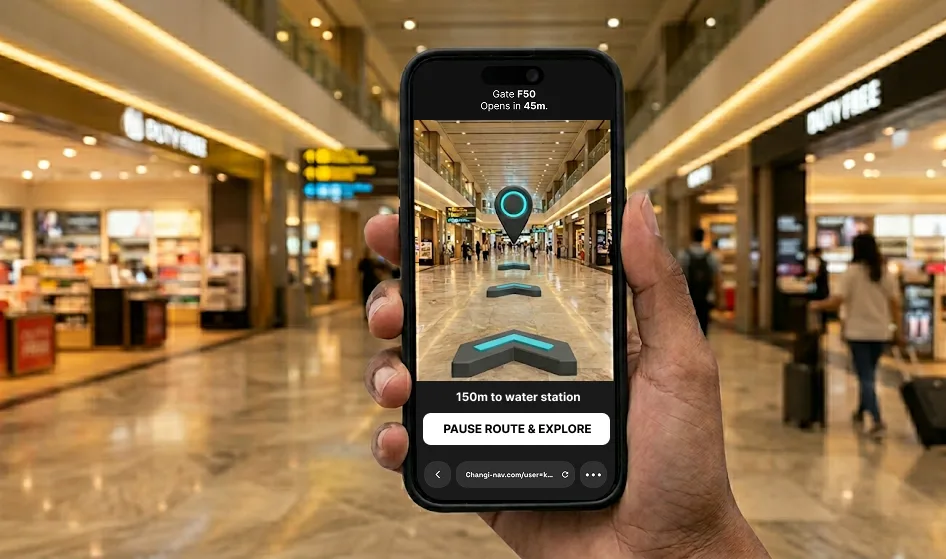
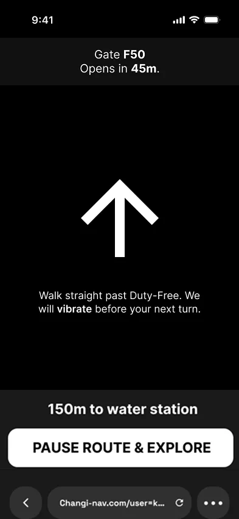

{{ p.conn }}
{{ p.name }}
{{ p.d }}
{{ p.bar }}
Layover{{ p.mins }}min
A wayfinding concept that tells transit travellers how long they have, so waiting at the gate becomes a choice.

In most of Changi, security screening happens at each gate, and the holdroom behind it has little to do. Aura Space is a speculative concept that gives transit travellers a live countdown and a route, so they can leave the gate area knowing when to come back.
The case study reads like a trip through the airport: check-in, security, boarding, then arrivals, where I check which of my assumptions landed.
Every sign says where. None says how long.
How is Changi laid out for someone in transit, and what can’t they see from where they stand?
Terminals 1 to 3 screen passengers at each gate. Go through early and the toilets, food and shops stay on the other side.
The screens answer where to go. The question that decides when to leave the mall gets no answer in one place.
I sketched two transit travellers to test the idea against. Neither comes from interviews.
Past this line, the airport shrinks to one room.
What are travellers trading when they go through early, and what should a design never do to them?
I called it the gate trap: when you can’t tell how long you have, going through early feels safe. It is my inference from desk research, not something I watched happen.
How might the gate become a place travellers choose to go, not one they hide in?
A traveller in transit has a pass, a phone and no patience. These rules decided what got built and what got cancelled.
Let the phone hold the countdown.
An old kiosk, a browser tab and a few chevrons in the air: no new hardware for Changi, and no app for the traveller.
Each moment answers one question: how long do I have, which way, what’s near, and when must I go back.
{{ stepSel.what }}
{{ stepSel.why }}
Serves: {{ stepSel.serves }}Held low, the tab shows a single arrow and the countdown. The camera stays off until the traveller raises the phone.

Most AR wayfinding demos run in empty halls. Changi’s transit mall has trolleys, families and overhead signs, so I set four placement rules.
Gate screening is the one step a traveller can’t easily undo, so it is the one moment the design interrupts.
No toilets or food past gate screening.
The warning’s content, as specified. It has no designed screen yet.Not every assumption landed.
Since presenting, I have checked what I claimed. The design held up better than the evidence under it.
So the assumptions get their own board. Tap a row to see how I’d check it.
The first one could cancel the rest, which is why it goes first.